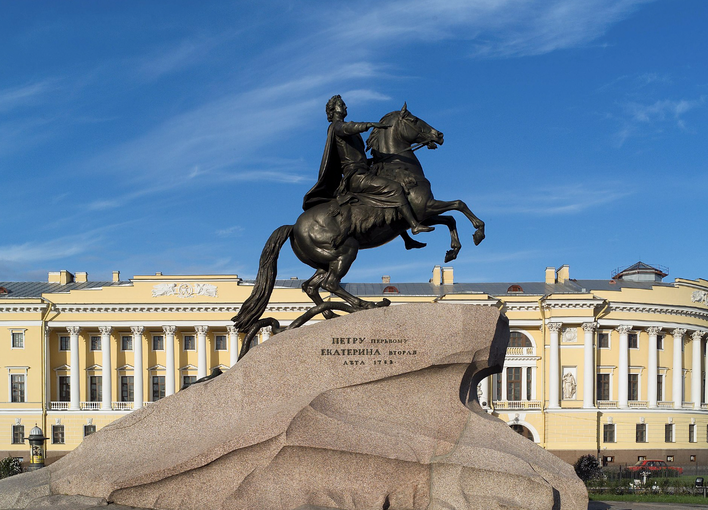
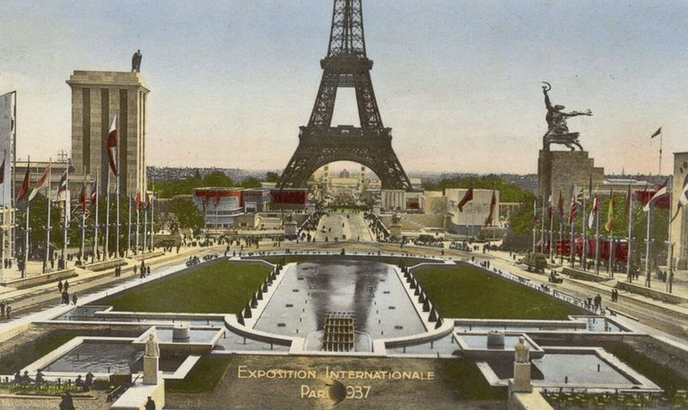

Monuments

Bronze Horseman (1782) in St. Petersburg
commissioned by Catherine the Great.
 Worker and Collective Farm Woman (1937) in Moscow
Worker and Collective Farm Woman (1937) in Moscow
author Vera Mukhina.

Worker and Collective Farm Woman in Moscow
The Soviet pavilion opposite
the Nazi Pavilion of an eagle and the swastika at the 1937 World’s Fair in Paris.